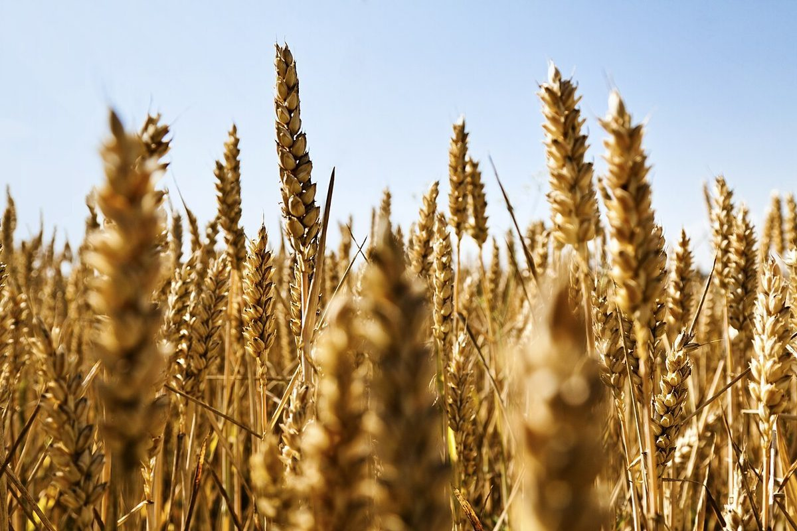
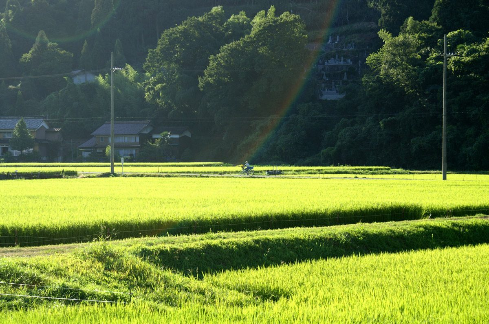

コーヒーを飲みながら、のんびり過ごせるお店だったらいいなと思います。
VOICE
口コミ
このページの内容は、実際のお客様の声ではありません。サイトのイメージをつかんでいただくための創作したサンプルです。
ふらっと立ち寄れる、近所のお気に入りの一軒になるといいなと思います。
お店の情報がひと目で分かるサイトだと、出かける前に安心できると思います。


※上の文章はすべて制作側が作成したイメージ例です。実際のご感想は、お店のInstagramなどでご確認ください。
掲載写真はフリー素材のイメージ写真です。店舗の実際の様子ではなく、他の地域で撮影されたものや撮影地が不明なものを含みます。